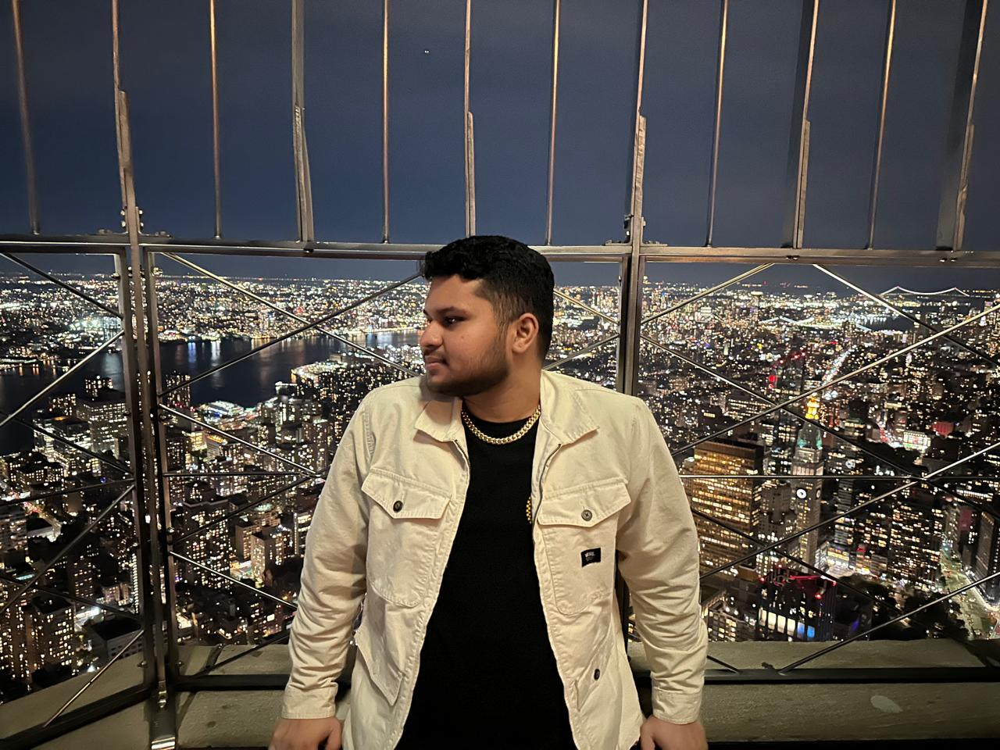

Desenvolvedor em formação | Tecnologia | Futuro profissional da área
Nascido em Vitória-ES, morei nos Estados Unidos por 6 anos e meio, onde desenvolvi minha independência, maturidade e fluência em inglês. Hoje moro sozinho no Brasil, conciliando estudos, trabalho e responsabilidades, sempre buscando evolução pessoal e profissional.

Ensino médio concluído nos EUA (Milford - Massachusetts). Curso de TI e montagem e manutenção de
computadores.
Atualmente cursando o 1º Periodo de Ciência da Computação na UVV.
Matérias:
Gosto de jogar basquete, videogame, assistir séries e animes. Curto vários estilos musicais, principalmente trap e rock.
Grande parte da minha vida adulta foi vivida nos EUA, onde adquiri experiência em diversas áreas e desenvolvi uma mentalidade resiliente.
Meu objetivo é trabalhar com tecnologia, evoluir constantemente e construir soluções inovadoras no mercado.
Tenho sonho de trabalhar home office em uma empresa americana se precisar morar no exterior.